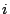
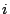

54. Optimizing Property
Codes in Protein Sequences Reveals Structural
Characteristics
Olaf Weiss, 1 Andreas Ziehe, 2 Hanspeter Herzel 3
Keywords: Protein sequence analysis,
property codes, autocorrelation function
Many popular techniques used in protein
bioinformatics such as neural networks or autocorrelation functions
rely on numerical input rather than protein sequence input. Usually
the necessary translation is performed by choosing heuristically
from one of the many property codes (e.g. hydrophobicities) in the
biochemical literature. We propose a novel approach of finding
property codes specifically adapted to and derived from given sets
of protein sequences. This is done by maximizing the
autocorrelation function values in the sequences with respect to
the property code used to translate the amino acids to numerical
values.
As already done in [5], we aim at finding property
codes leading to a large autocorrelation function signal strength
in given protein sequence. We present an iterative method based on
matrix diagonalization. Furthermore, the similar concept of joint
matrix diagonalization with Jacobi methods [1] is also applied. To our
knowledge, this is the first use of this method in a bioinformatics
context. We compare our results to off-the-shelf optimizers and get
similar results. However, our method has the advantage of
discovering other additional biologically relevant property codes
from secondary optima.
The autocorrelation function (acf)  measures, whether patterns tend to reoccur at a
distance
measures, whether patterns tend to reoccur at a
distance  in a time series. Protein sequences,
however, have to be converted into numerical sequences using a
property code . In other words,
the correlation function in protein sequence
has the property code as
parameter.
in a time series. Protein sequences,
however, have to be converted into numerical sequences using a
property code . In other words,
the correlation function in protein sequence
has the property code as
parameter.
We consider property codes as assignments of a
number to each of the 20 amino acids in protein sequences. We write
the property codes as vectors with the 20 values of the property
codes being its coefficients.
The acf can then be written as a quadratic
form
of the matrix whose elements are defined by
, where
 is the joint probability of finding
residues  and
is the joint probability of finding
residues  and  separated
by positions,
separated
by positions,
 , and
[2]. A plot of the Kyte-Doolittle
hydrophobicity [4] acf
using (1) averaged over the
pdb_select set of protein sequences [3] is plotted as the black line
in Fig. 1.
, and
[2]. A plot of the Kyte-Doolittle
hydrophobicity [4] acf
using (1) averaged over the
pdb_select set of protein sequences [3] is plotted as the black line
in Fig. 1.
Figure: Acfs of the Kyte-Doolittle hydrophobicity [4] (black, enlarged in the insert)
and the optimized property code (grey) in the
pdb_select sequences [3].
|
|
Our optimization aims at maximizing
 with
with
 , by
varying .
, by
varying .
We propose one method that iterates finding the
largest Eigenvalue of linear combinations of , to maximize
 . As an alternative approach, we
apply the extended Jacobi method for joint diagonalization
[1] to the matrices
i.e. without integrating over
. This is compared with an off-the-shelf
optimization of
.
. As an alternative approach, we
apply the extended Jacobi method for joint diagonalization
[1] to the matrices
i.e. without integrating over
. This is compared with an off-the-shelf
optimization of
.
The different methods applied yield similar
optimal property codes, but differ in their abilities to find
secondary optima. For the pdb_select sequences, the
according optimized acf is plotted in grey in Fig. 1. Although the
the optimized acf is similar to that of the hydrophobicity acf in
shape, it has a much larger amplitude. In fact, the corresponding
optimized property code is similar to hydrophobicities, such that
it can be seen as an optimized hydrophobicity.
We also applied our methods to sets of protein
sequences rich in  -helices and
-strands respectively. We could
reproduce known acf patterns for -helices and give optimized property codes. For
-strands we also found novel
correlation patterns.
-helices and
-strands respectively. We could
reproduce known acf patterns for -helices and give optimized property codes. For
-strands we also found novel
correlation patterns.
With the proposed concept of optimizing property
codes we find the amino acid properties, that are most structured
(least random) along the underlying protein sequences. The methods
reproduce and enhance known biological findings and find novel
features.
- 1
- Cardoso, J.-F. and Souloumiac A. 1996.
Jacobi angles for simultaneous diagonalization.
SIAM J. Mat. Anal. Appl., 17(1):161-164.
- 2
- Herzel, H. and Große, I. 1995.
Measuring correlations in symbol sequences.
Physica A, 216:518-542.
- 3
- Hobohm, U. and Sander, C. 1994.
Enlarged representative set of protein structures.
Protein Sci., 3(3):552-554.
- 4
- Kyte, J. and Doolittle, R. F. 1982
A simple method for displaying the hydropathic character of a
protein.
J. Mol. Biol., 157:105-132.
- 5
- Weiss, O. and Herzel, H. 1998.
Correlations in protein sequences and property codes.
J. theor. Biol., 190:341-353.
Footnotes
- ... Weiss,1
- Fraunhofer FIRST.IDA, Kekuléstr. 7, 12489 Berlin,
Germany.
E-mail:
olaf.weiss@first.fraunhofer.de
- ... Ziehe,2
- Fraunhofer FIRST.IDA, Kekuléstr. 7, 12489 Berlin,
Germany.
E-mail:
andreas.ziehe@first.fraunhofer.de
- ... Herzel3
- Innovationskolleg Theoretische Biologie, Humboldt-University
Berlin Invalidenstr. 43, 10115 Berlin, Germany.
h.herzel@itb.biologie.hu-berlin.de
2003-04-07